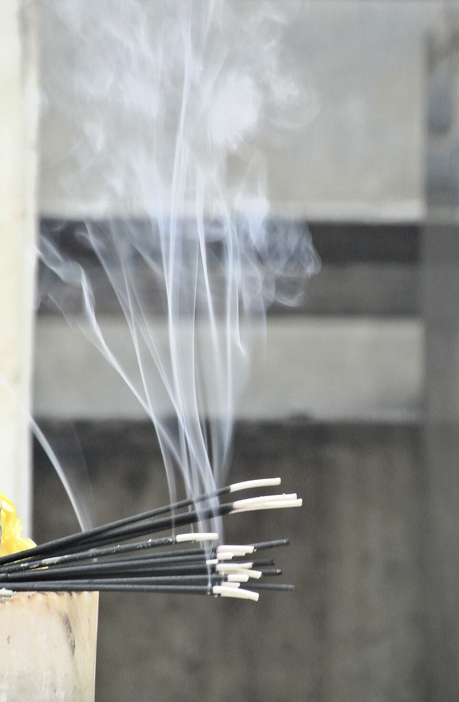

Remolinos que se forman, se estiran y se rompen: un problema que sigue abierto
El humo de un sahumerio sube primero en un hilo recto y prolijo. Unos centímetros más arriba empieza a ondularse, y enseguida se deshace en remolinos que se enroscan y se mezclan con el aire. Ese paso del orden al desorden es la turbulencia. Está en el agua de una canilla abierta, en el viento, en la estela de un barco y en el aire detrás de un camión. Y es, todavía, uno de los grandes problemas sin resolver de la física.
OpenStax la describe así: en un flujo turbulento, las capas del fluido se mezclan con remolinos y torbellinos, y aparecen velocidades importantes en direcciones distintas de la del flujo [1]. Señala dos causas principales: cualquier obstáculo o esquina filosa, como en una canilla, que le da al fluido velocidades perpendiculares al flujo; y las velocidades altas, cuando el arrastre entre capas vecinas forma remolinos [1]. Y destaca una consecuencia: el flujo turbulento mezcla el fluido, lo calienta más y opone mucha más resistencia que el laminar [1].

David Tong, de la Universidad de Cambridge, lo cuenta con otra imagen: los flujos laminares, calmos y serenos, se vuelven inestables y son reemplazados por algo desordenado, con el fluido moviéndose en direcciones aparentemente al azar, y remolinos que se forman, se estiran y se rompen en remolinos más chicos [2].
La turbulencia aparece cuando el número de Reynolds supera un valor crítico [2]. Ese valor depende del flujo. Tong da un ejemplo llamativo: el flujo entre dos placas que se deslizan, el flujo de Couette, es matemáticamente estable frente a perturbaciones arbitrariamente chicas, y sin embargo los experimentos y las simulaciones muestran que se vuelve turbulento a partir de Re ≈ 400 [2]. La transición no siempre se puede predecir con un análisis simple.
La multitud que corre: una fila de gente que camina despacio por un pasillo avanza ordenada. Si todos corren, cualquier tropiezo hace que alguien se corra de costado, choque con otro, y en un momento la fila se convierte en un tumulto donde cada uno va para cualquier lado. Por debajo de cierta velocidad, los tropiezos se corrigen solos; por encima, se amplifican.
Hay algo paradójico en la turbulencia. Tong subraya que hay buenas razones para creer que la describen correctamente las ecuaciones de Navier-Stokes, como muestran las simulaciones numéricas directas [2]. Esas ecuaciones son deterministas. Sin embargo, el movimiento turbulento parece aleatorio [2]. La razón es la sensibilidad a las condiciones iniciales propia de los sistemas caóticos: el término no lineal de la ecuación lleva al sistema a un estado caótico, donde el movimiento depende muchísimo de cómo empezó [2].
Por eso, en lugar de buscar soluciones exactas, que no es viable, la turbulencia se estudia de manera estadística, mirando propiedades promedio [2]. Una herramienta es separar la velocidad en un flujo medio y unas fluctuaciones, el promedio de Reynolds, que se cuenta en flujo estacionario [2].
Tong lo dice sin vueltas: la turbulencia es uno de los grandes problemas de la física y, a pesar de décadas de estudio, se la entiende poco [2]. Lo que sí se entiende bastante bien es qué pasa con la energía: entra por los remolinos grandes, pasa a remolinos cada vez más chicos y se disipa en calor en los más chicos, gracias a la viscosidad [2]. Esa idea, la cascada de energía, es la base de la teoría de Kolmogorov de 1941 [2].
Turbulencia útil: la turbulencia no siempre es un problema. Mezcla muchísimo más rápido que la difusión, y por eso revolvemos el café, como se cuenta en revolver el café. Y una capa límite turbulenta se despega más tarde de un cuerpo redondeado, lo que reduce su arrastre: es el secreto de los hoyuelos de la pelota de golf [2].
La turbulencia es el estado de un fluido en el que el orden laminar se rompe en remolinos de todos los tamaños. Aparece por encima de un número de Reynolds crítico, mezcla y disipa energía, y aunque la gobiernan ecuaciones deterministas, su comportamiento solo se puede describir estadísticamente. Después de muchas décadas de estudio, sigue siendo uno de los problemas más difíciles de la física clásica.
Pregunta para la comunidad: OpenStax nota que el humo sube más rápido mientras su flujo es laminar que después de volverse turbulento [1]. ¿Por qué la turbulencia lo frena? Pensalo con la mezcla con el aire de alrededor.